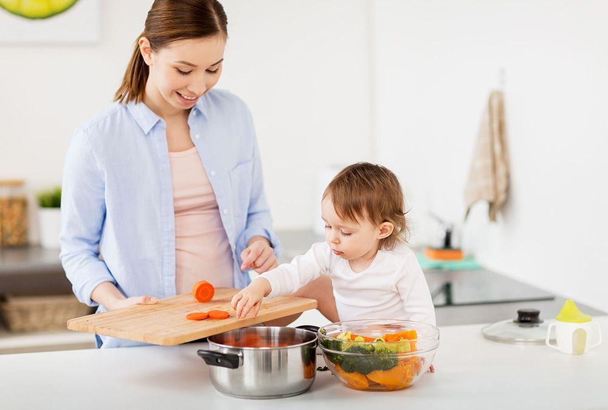

A partir de los 6 meses de edad los bebés empiezan a comer otros alimentos aparte de la leche, aunque hasta los 12 meses la leche (materna o una fórmula adaptada infantil) sigue siendo su principal alimento y fuente de nutrientes. Muchas madres siguen amamantando a sus bebés hasta los 2 años o más, y los beneficios de esto son inmensos. En algunas culturas era frecuente que niños y niñas recibieran leche de sus madres hasta los 6-7 años. Como madre, es importante que seáis tú y tu hijo/a quienes decidáis hasta cuándo queréis continuar vuestra lactancia, independientemente de lo que digan familiares, amigos o profesionales sanitarios.
>Todos los padres tienen el derecho de elegir la forma en la que van a educar a sus hijos y esto incluye su alimentación. Nuestra dieta no es solo una cuestión cultural, gastronómica o nutricional, sino que responde a un modo concreto de ver la vida. En el caso de las familias veganas la dieta no es más que una consecuencia del compromiso por evitar, en la medida de lo posible, todas las formas de explotación y crueldad hacia los animales; compromiso que se manifiesta en muchos más niveles además de la comida.
Por eso la publicación de Por eso no comemos animales (Why we don’t eat animals) en español es una excelente noticia: un libro con ilustraciones impresionantes y un texto sincero dirigido a niños a partir de 6 años, creado por Ruby Roth.
«Por eso no comemos animales» es un libro único sobre nuestra relación con los demás animales. Es ideal para niños de 6 a 10 años y para cualquier adulto que quiera recordar por qué nuestra inclinación natural es no hacer daño a los otros animales.
El libro está disponible a través de la distribuidora Alfaomega y en librerías de todo el mundo. Para más información sobre Ruby Roth, visita su sitio web: http://www.wedonteatanimals.com.
| Cuentos | Educación | Nutrición |
|---|---|---|
| Por eso no comemos animales | Educar niños veganos | Mamá vegana |
| Dílo por mí | Padres conscientes | Healty Kyds |
El mejor newsletter para padres de niños veganos. Recibe información valiosa y actual.